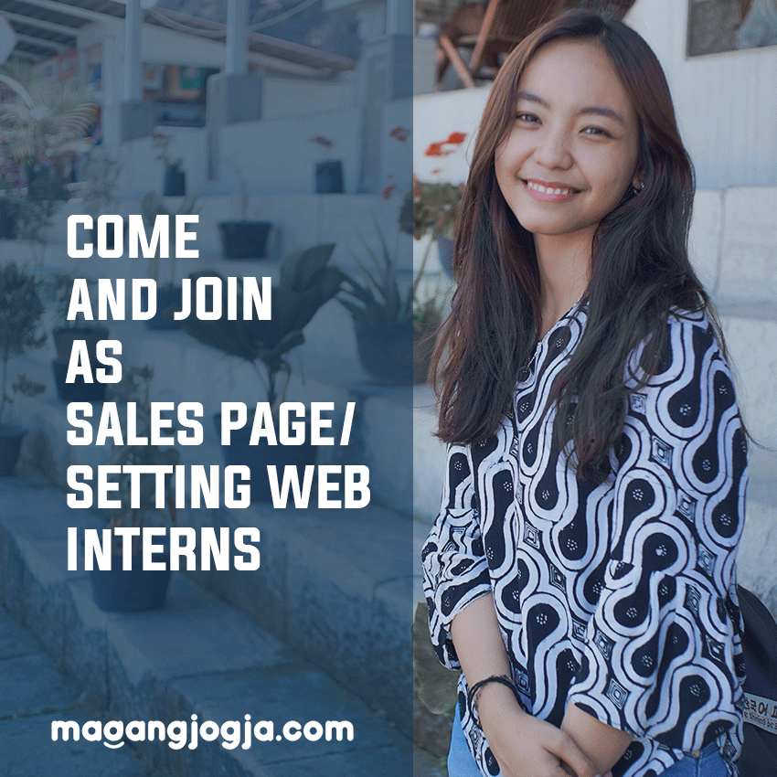
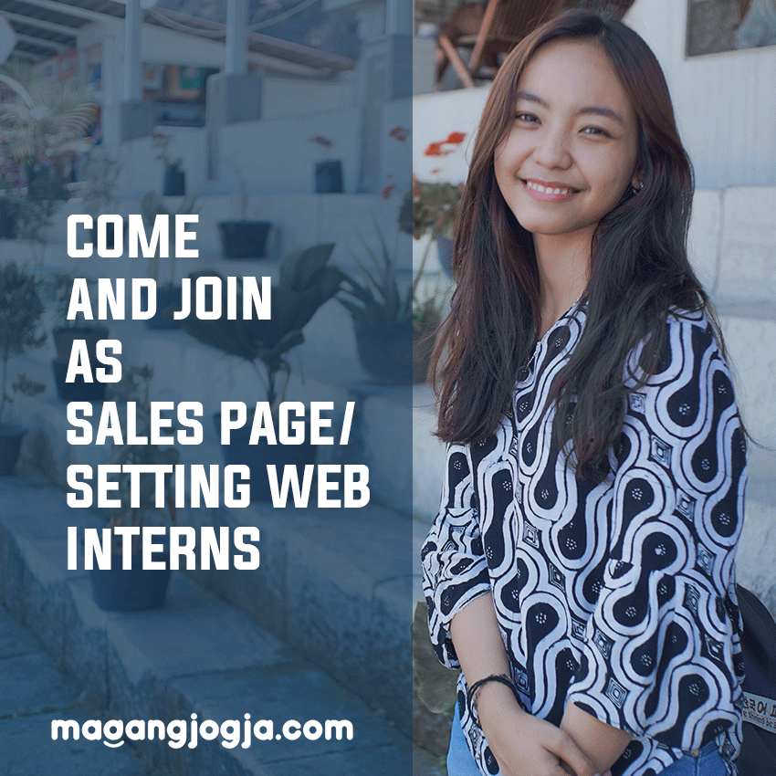

Sertifikat

Sertifikat Pelatihan
Junior Graphic Design
Junior Graphic Design
Sertifikat Pelatihan Junior Graphic Design
Sertifikat ini saya dapatkan setelah mengikuti pelatihan Junior Design Graphic yang diselenggarakan oleh Digital Talent Scholarship dalam program Vocational School Graduate Academy (VSGA). Saya mengikuti pelatihan selama tiga bulan pada tanggal 12 Juli - 23 Oktober 2021. Saat pelatihan saya menggunakan software Adobe Illustrator, Adobe Photoshop dan CorelDraw.
 X
X
Sertifikat Pelatihan Front End Developer
Sertifikat ini saya dapatkan setelah mengikuti pelatihan Front End Developer
yang diselenggarakan oleh Digital Talent Scholarship dalam program Fresh Graduate Academy (FGA). Saya mengikuti pelatihan selama satu bulan pada tanggal 7 Maret - 1 April 2022.
Saat pelatihan saya menggunakan bahasa pemrograman HTML, CSS, dan Javascript.
Di pelatihan ini saya belajar melalui situs web progate.com, di pelatihan ini saya
mendapatkan akun premium secara gratis. Saat pelatihan, seain belajar HTML, CSS, dan Javascript saya juga bisa membuka
pelajaran lain seperti Sass dan github. Berikut ini lampiran sertifikat yang saya peroleh.
 X
X

Sertifikat Polytechnic
Computer Club
Computer Club
Sertifikat Polytechnic Computer Club
Sertifikat ini saya dapatkan setelah mengikuti Unit Kegiatan Mahasiswa
yang berkaitan dengan program studi kuliah saya yaitu teknik informatika.
Saya mengikuti kegiatan mahasiswa ini dengan tujuan untuk menambah relasi serta wawasan
mengenai dunia teknologi yang tidak saya dapatkan dari mata kuliah saya. Selain itu saya
juga mengikuti beberapa program kerja yang diselenggarakan oleh UKM PCC ini, berikut ini
lampiran sertifikat yang saya peroleh setelah mengikuti beberapa kepanitiaan

 X
X
Sertifikat Himpunan Mahasiswa Elektro
Sertifikat ini saya dapatkan setelah mengikuti Himpunan Mahasiswa Elektro.
Saya mengikuti kegiatan mahasiswa ini dengan tujuan untuk melatih kemampuan saya dalam berorganisasi
dan juga menambah relasi serta melatih diri untuk bersosialisasi yang baik.
Dalam organisasi ini juga terdapat banyak proker yang melatih saya dalam hal kepanitiaan, khususnya kerjasama tim.
Saat menjalankan beberapa proker, saya pernah menjadi penanggung jawab dalam divisi logistik(desain), Sekretaris, Perlengkapan, dan Konsumsi.
Berikut ini lampiran sertifikat yang saya peroleh setelah mengikuti beberapa kepanitiaan

 X
X

Sertifikat Lainya
Sertifikat Peserta Kegiatan
Sertifikat ini saya dapatkan setelah mengikuti beberapa
kegiatan seperti seminar dan kegiatan lainya.


 X
X

Sertifikat Magang
Sertifikat Magang
Sertifikat ini saya dapatkan setelah mengikuti magang di SevenInc sebagai desainer grafis selama 3 bulan.
X
Feeds Instagram MakeOver.id
Project ini merupakan sebuah tugas yang dibuat saat magang berupa
Feeds Instagram yang bertujuan untuk mengiklankan sebuah jasa editing video agar menarik perhatian costumer
jika ingin membuat video seperti video undangan ulang tahun,
undangan pernikahan, jasa untuk joki tugas, dan sejenisnya.
Berikut ini beberapa desain yang saya buat.


Feeds Instagram jahitpakaian.com
Project ini merupakan sebuah tugas yang dibuat saat magang berupa
Feeds Instagram yang bertujuan untuk mengiklankan sebuah jasa konveksi untuk PDL.
Berikut ini beberapa desain yang saya buat.


Feeds Instagram Dakwah Islami
Project ini merupakan sebuah tugas yang dibuat saat magang berupa
Feeds Instagram dakwah yang bertujuan untuk memberi informasi
dan juga motivasi tentang agama islam kepada yang melihat kontent ini.
Berikut ini beberapa desain yang saya buat


Feeds Instagram gudangkaos.id
Project ini merupakan sebuah tugas yang dibuat saat magang berupa
Feeds Instagram Konveksi custom kaos yang bertujuan untuk menarik perhatian
customer yang ingin membuat kaos, jersey atau sejenisnya. Di feeds ini menjelaskan
customer bisa membuat kaos sesuai desain yang diinginkan.
Berikut ini beberapa desain yang saya buat


Feeds Instagram magangjogja.com
Project ini merupakan sebuah tugas yang dibuat saat magang berupa
Feeds Instagram tentang magangjogja.com. Di feeds instagram ini bisa dilihat
mengenai informasi suatu tempat magang di jogja dan kegiatan di dalamnya.
Berikut ini beberapa desain yang saya buat
 



Feeds Instagram hmepolines
Project ini merupakan sebuah tugas yang dibuat saat menjadi fungsionaris
di Himpunan Mahasiswa Elektro Polines. Saat itu saya yang bertanggung jawab atas
sosial media hmepolines.
Berikut ini beberapa desain yang saya buat